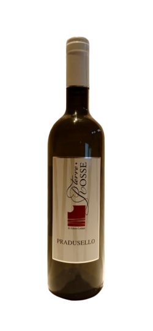

Cabernet Franc
A red, still, dry wine whose main feature is its young and pleasant freshness. Its ruby colour shows purple reflections. The nose preserves the aromas of its grapes, expressing vinous and herbaceous fragrance. The palate is strengthened with red fruit flavours, and tannins that maintain a mild, non-aggressive aftertaste. Perfect throughout the meal, with traditional dishes or with cold meats and aged cheeses. Un vino rosso, fermo, secco la cui caratteristica principale è la sua giovane e piacevole freschezza. Un colore rubino con riflessi violacei. Al naso preserva i profumi delle sue uve esprimendo fragranze vinose ed erbacee. Al palato si rafforza con sapori di frutti di bosco e grazie ai suoi tannini mantiene un retrogusto non aggressivo. Perfetto a tutto pasto, con piatti tradizionali o intermezzi a base di salumi e formaggi stagionati.